Biography
I am a Ph.D. student at LV-Lab, Nanyang Technological University, advised by Prof. Shuicheng Yan and Prof. Chunyan Miao. I am also a two-time founder and CEO: I built and led two startups before and during my Ph.D., shipping DreamFactory as CEO of my first company and later founding Pask.ai, where our proactive agent work grew out of real product needs. Before that I received my bachelor's degree from Beijing Institute of Technology, studied at Tsinghua University, and interned at the Qwen Team under the supervision of Dr. Jin Xu.
My research focuses on large audio language models and real-time speech interaction — building models that hear, think and speak at the same time. I led the Mini-Omni series, the first open-source end-to-end speech-to-speech conversational models, whose architecture has since been adopted as a starting point by a generation of omni models, together with Audio-Reasoner, Mini-Omni-Reasoner, Mega-ASR, the Audio Interaction Model and VoiceMem. I hold research to one bar: it has to be worth doing. Going forward I keep pushing on always-on multimodal interaction, with a focus on interactivity, robustness, reasoning and proactivity.
Outside the lab I advise industry teams on speech technology, have played in symphony orchestras for 16 years, and love animals — many of my projects use a Shiba Inu avatar in memory of Guagua, who grew up with me.
News
-
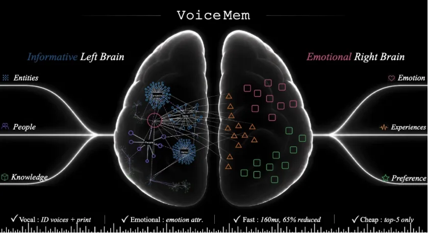
NewFactual memory and emotion/persona memory are kept apart and retrieved while the user is still speaking — persistent personalization without giving up real-time interaction.
-
Invited talk at Tsinghua University
On real-time audio interaction and where large audio language models go next — from streaming perception to models that decide when to speak.
-
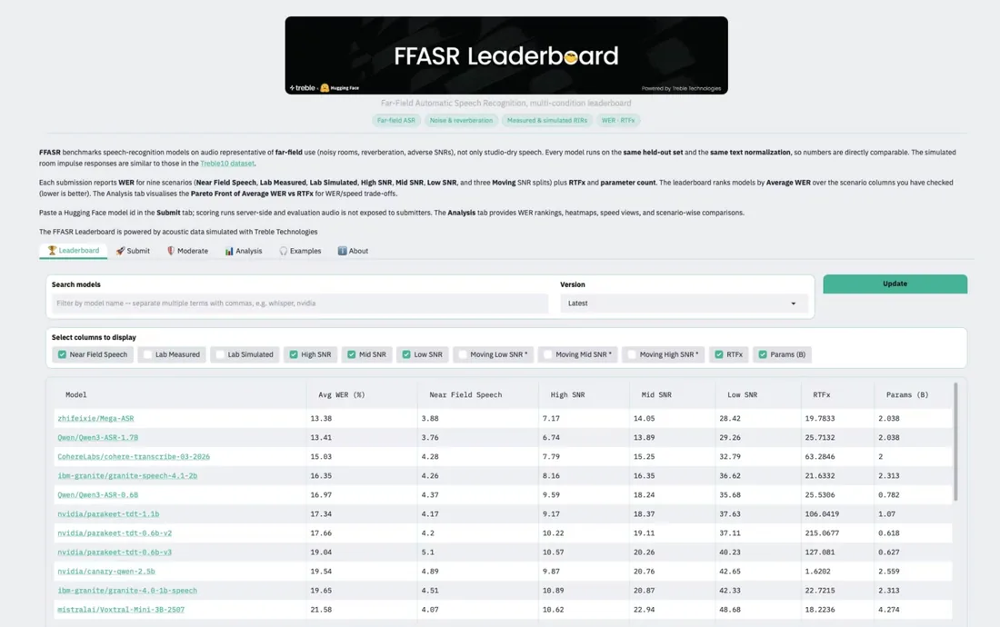
The far-field speech recognition benchmark run by Treble Technologies and Hugging Face, measuring ASR in noisy, reverberant rooms.
- 08/2026 🎉 JIT-Agent, a harness intelligence model that synthesizes task-adaptive agent harnesses just in time, is released.
- 07/2026 🎤 Invited to give a talk at Nanyang Technological University.
- 06/2026 🎤 Invited to speak at SuperAI Singapore 2026 at Marina Bay Sands and to serve as an advisor to SuperAI.
- 06/2026 🎉 We release the Audio Interaction Model, the first fully audio-driven real-time model: it listens continuously and decides on its own when to stay silent and when to speak, with the SoundFlow framework, the StreamAudio-2M corpus (2.6M items, 302K hours, 7 capability families) and Proactive-Sound-Bench. Project · Code
- 05/2026 🎉 We release Mega-ASR, a speech recognition model built for every acoustic scene, improving over Qwen3-ASR by more than 30% in the wild. Code
- 05/2026 🎤 Invited to give a talk at Shokz (韶音) on audio interaction for wearable devices.
- 05/2026 🎤 Invited to give a talk at PLAUD.AI on always-on recording and on-device speech understanding.
- 05/2026 🎉 Deep-Reporter, deep research for grounded multimodal long-form generation, is accepted by ACL 2026.
- 04/2026 📰 PASK is featured by AI Era (新智元) — "streaming intent detection + perpetual memory: NUS & NTU bring a Jarvis-style AI into reality". Project
- 04/2026 🤝 Invited research exchange with Prof. Minlie Huang (Tsinghua University, CoAI Group).
- 03/2026 🤝 Invited technical exchange at Agora (声网) on real-time conversational AI.
- 01/2026 🎉 HeartMula, a family of open-sourced music foundation models, is released.
- 09/2025 🎉 We release Mini-Omni-Reasoner, the first model that reasons while it speaks — silent thinking tokens interleaved with spoken tokens, so reasoning costs no extra latency. Covered by Synced (机器之心). Code
- 09/2025 🎉 Audio-Reasoner is accepted by EMNLP 2025 (Main Conference).
- 08/2025 🎤 Invited to give a talk at Zhipu AI (智谱).
- 07/2025 🎤 Invited to give a talk at Kunlun Tech / Skywork AI (昆仑万维).
- 07/2025 🎉 PASK: Providing Answer before AsKing toward Proactive AI Agent is accepted by ACM MM 2025 (Demo).
- 05/2025 🎤 Invited to give a talk at Tsinghua University on audio reasoning.
- 04/2025 🥈 Audio-Reasoner, the first audio reasoning model, takes the silver medal on the official MMAU benchmark leaderboard.
- 03/2025 🎉 We release Audio-Reasoner and the CoTA dataset (1.2M reasoning-rich samples), lifting MMAU-mini by +25.42%, AIR-Bench by +14.57% and MELD by +8.01%.
- 03/2025 🏛️ Mini-Omni is credited by Qwen2.5-Omni as an architectural basis for its end-to-end speech generation design.
- 01/2025 ⭐ Mini-Omni2 passes 1.5k GitHub stars.
- 12/2024 ⭐ Mini-Omni passes 3k GitHub stars.
- 10/2024 🤝 Invited to serve as an advisor at AgiBot (智元机器人).
- 10/2024 🤝 Invited to give a talk at Xiaomi (小米) and serve as its speech technology advisor.
- 10/2024 🎤 Invited to give a talk at Kling AI (可灵).
- 10/2024 🎉 We release Mini-Omni2, the first real-time audio-visual interaction model with duplex capability — it sees, listens and talks at once, and can be interrupted mid-sentence. Code
- 09/2024 📰 Mini-Omni is covered by Synced (机器之心) — "the first open-source end-to-end speech dialogue model".
- 08/2024 🎉 We release Mini-Omni, the first open-source end-to-end model that can hear, talk and think in streaming. It becomes the #1 Paper of the Day on Hugging Face.
- 07/2024 🎉 As founder and CEO of my first startup, we release DreamFactory, a multi-agent framework for multi-scene long video generation, covered by Synced (机器之心).
I Lead These Projects * equal contribution | full list on Google Scholar
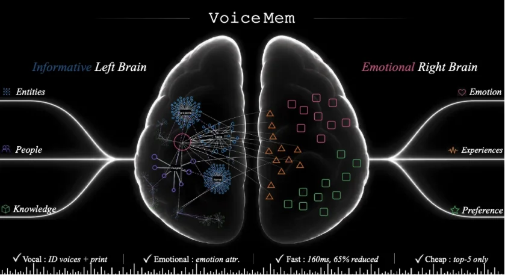
New
VoiceMem makes long-term memory native to the real-time voice loop. Its factual “left brain” and emotion/persona “right brain” retrieve compact memories while the user is still speaking, combining personalization with near-zero interaction overhead. The result is a practical path from stateless voice assistants to agents that remember, adapt and build continuity across conversations.
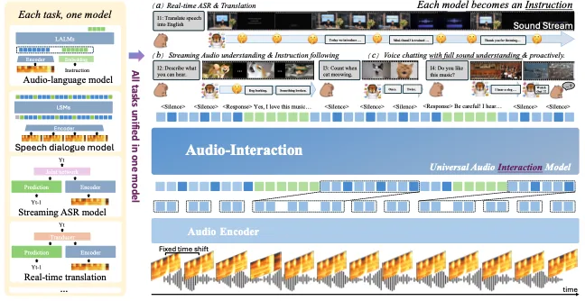

Most voice assistants only react after a user speaks. Audio Interaction Model turns continuous sound into an always-on perceive–decide–respond loop, so a model can decide when to stay silent or proactively intervene. SoundFlow, StreamAudio-2M and Proactive-Sound-Bench make real-time proactive audio interaction a trainable and measurable research problem.
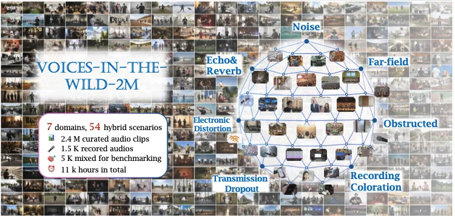

Mega-ASR targets the gap between clean ASR benchmarks and deployment in noisy, reverberant, moving environments. By scaling physically grounded compound acoustic simulation, it cuts WER by more than 30% versus strong baselines in complex scenes and tops the FFASR far-field leaderboard — a step toward ASR that remains dependable in the real world.
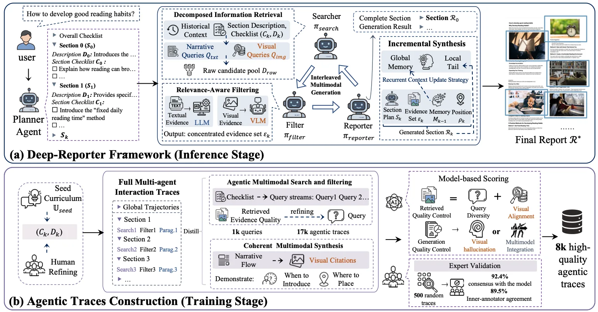
Deep-Reporter addresses a core weakness of research agents: long reports drift from evidence and usually treat figures as afterthoughts. Its multimodal search, checklist-guided synthesis and recurrent context management keep text, images and citations grounded together. M²LongBench makes this harder, more realistic form of long-form generation reproducibly measurable.
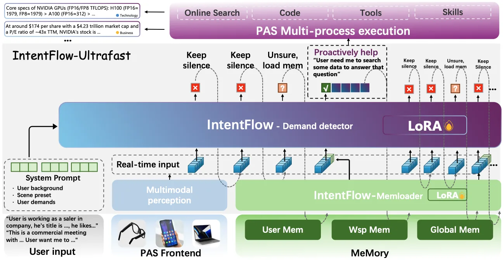
PASK moves assistants from answering explicit requests toward anticipating latent needs under real latency constraints. Its demand detection, long-term memory and streaming IntentFlow components form an end-to-end proactive-agent stack, while LatentNeeds-Bench evaluates the setting on user-consented data. The work reframes proactivity as a deployable systems problem rather than a demo feature.
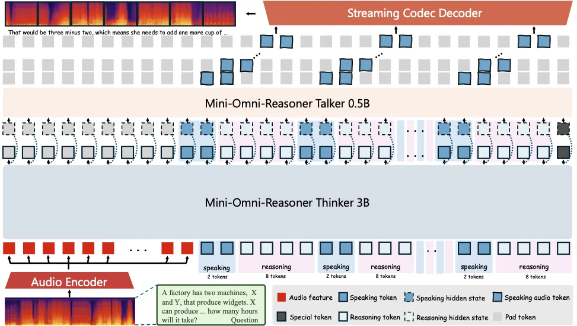

Mini-Omni-Reasoner removes the usual trade-off between reasoning quality and spoken latency by interleaving silent reasoning tokens with speech tokens in one stream. It improves Spoken-MQA arithmetic by +19.1% with no extra decoding latency, establishing thinking-in-speaking as a practical paradigm for reasoning-capable real-time voice models.
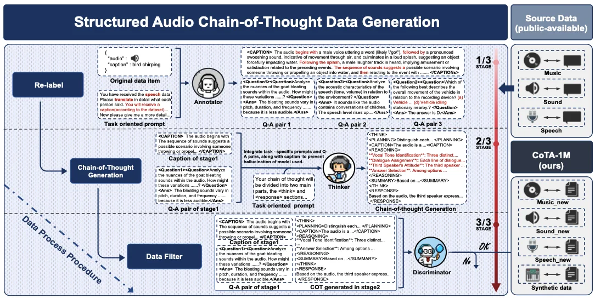

Audio-Reasoner brought deliberate reasoning to large audio-language models, showing that structured reasoning training transfers beyond text to sound, music and speech. With the 1.2M-sample CoTA dataset, it achieved strong gains across MMAU-mini, AIR-Bench and MELD, helping establish audio reasoning as a distinct and reproducible research direction.
Cited by Qwen3-Omni · Audio Flamingo 3 · MMAR (NeurIPS 2025) · MMAU-Pro · SonicBench · referenced by the Interspeech 2026 Audio Reasoning Challenge
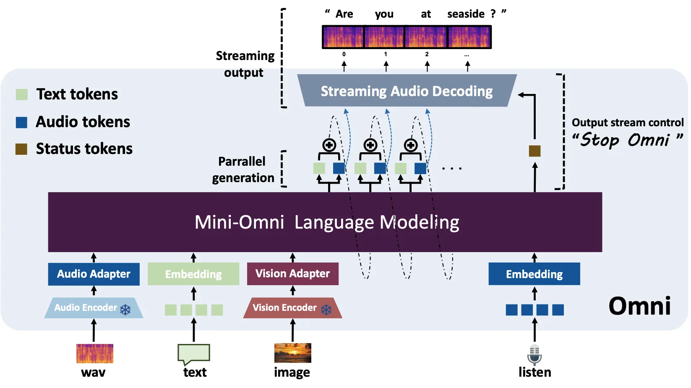

Mini-Omni2 was an early open-source reference for GPT-4o-style interaction: a single model that can see, hear and speak in real time, including mid-sentence interruption. Its duplex, end-to-end design showed that natural multimodal conversation did not have to remain exclusive to closed frontier systems.
Cited by Qwen2.5-Omni · Baichuan-Omni-1.5 · MiniCPM-o · VITA-1.5 · Step-Audio · EMOVA
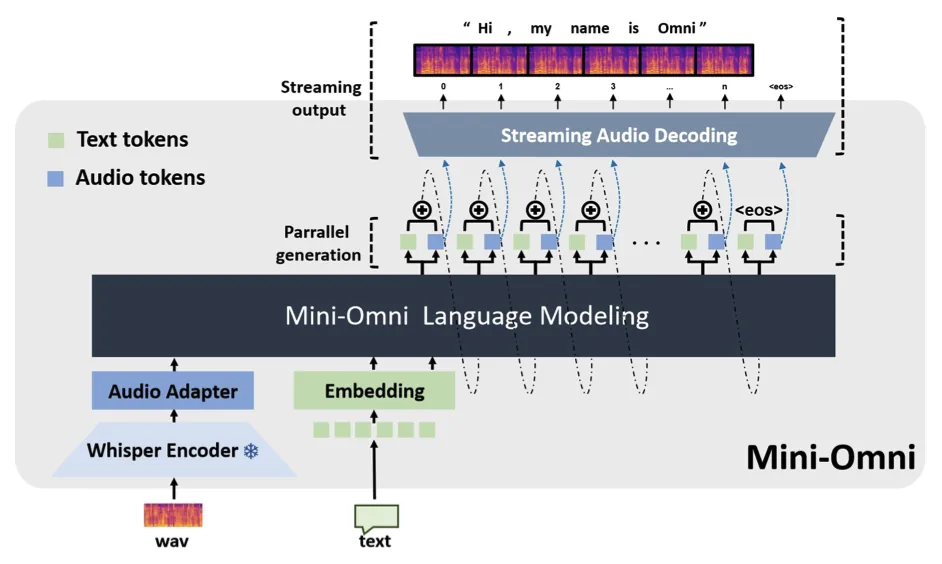

Mini-Omni made direct end-to-end speech-to-speech interaction openly reproducible. Parallel speech generation lets the model hear, think and talk in one streaming pipeline instead of chaining ASR, an LLM and TTS. The work became a widely used architectural reference for the open omni-model wave and was later cited as a basis for Qwen2.5-Omni.
Cited by Qwen2.5-Omni · Kimi-Audio · Step-Audio · GLM-4-Voice · Baichuan-Omni-1.5 · MiniCPM-o · LLaMA-Omni2 · Freeze-Omni
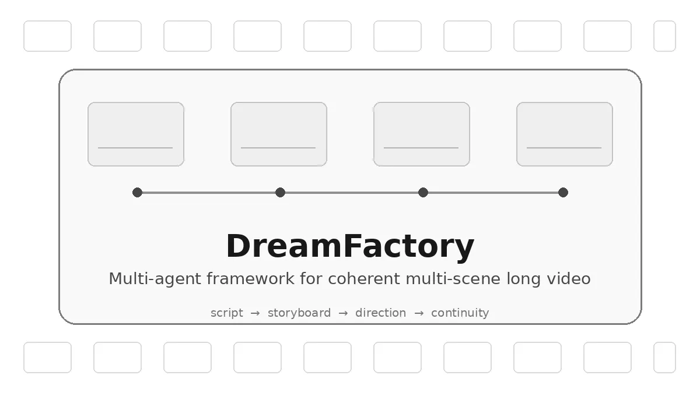
DreamFactory reframed long-video generation as coordinated production rather than isolated clip sampling. Its multi-agent “film crew” separates scripting, storyboarding, direction and continuity so multiple scenes can stay coherent over time. The work was an early demonstration that agent orchestration could extend generative video from short clips toward structured, multi-scene narratives.
Selected Publications
-
JIT-Agent: Scaling Harness Intelligence via Just-in-Time Harness Evolution
-
HeartMula: A Family of Open Sourced Music Foundation Models
-
PASK: Providing Answer before AsKing toward Proactive AI Agent
-
Development and Validation of a Wearable Intelligent Telerehabilitation Device for Postoperative Rehabilitation of Chronic Ankle Instability
-
Spider Silk-Inspired Environmentally Adaptive Intelligent Graphene Artificial Throat
-
Flexible and Skin-Compatible rGO/PVDF Composite Sensor for Multi-Functional On-Skin Applications
Activities
- Gold Award, NTU Entrepreneurship Competition
- National Scholarship, Ministry of Education of China
- Tsinghua University Scholarship
- #1 on the FFASR Leaderboard — Mega-ASR, 2026
- Silver medal on the MMAU Leaderboard — Audio-Reasoner, 2025
- #1 Paper of the Day on Hugging Face — Mini-Omni (2024) and Mega-ASR (2026)
- Advisor, SuperAI
- Speech technology advisor, Xiaomi (小米)
- Advisor, AgiBot (智元机器人)
- Tsinghua University (2025, 2026) · Nanyang Technological University · SuperAI Singapore 2026
- Xiaomi (小米) · Kling AI (可灵) · AgiBot (智元机器人) · Zhipu AI (智谱) · Kunlun Tech (昆仑万维)
- Shokz (韶音) · PLAUD.AI · Agora (声网)
- Research exchange with Prof. Minlie Huang, Tsinghua University
- Synced (机器之心) — DreamFactory · Mini-Omni · Mini-Omni-Reasoner
- AI Era (新智元) — PASK
- Reviewer for NeurIPS, ICLR, ICML, ACL, EMNLP, ACM MM, CVPR, ICCV
- Reviewer for IEEE/ACM Transactions on Audio, Speech and Language Processing
- Maintainer of the Mini-Omni series, Audio-Reasoner, Mega-ASR, Audio-Interaction and VoiceMem — thousands of GitHub stars and widely used as baselines in the speech-LM community
- Open datasets: CoTA, Spoken-Math-Problems-3M, Voices-in-the-Wild-2M, StreamAudio-2M
- Symphonic musician for 16 years — orchestral performance is my other long-running project
- A lifelong dog person; my projects carry a Shiba Inu avatar in memory of Guagua